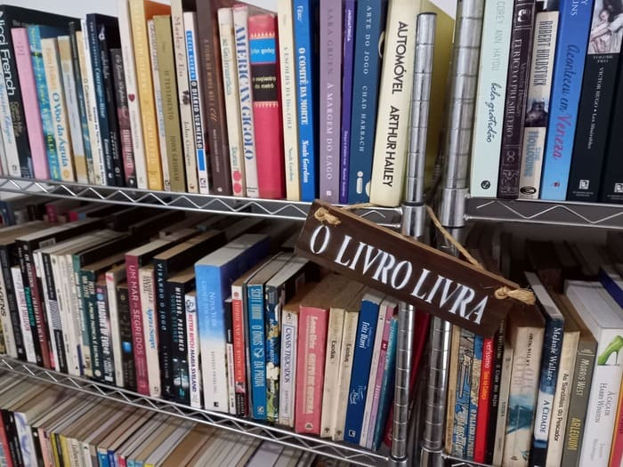

O Sebo me livro foi criado em outubro de 2017. Nunca teve loja física. Comecei vendendo pela Estante Virtual. Hoje também vendo pelo Shopee e Mercado Livre.
Além das compras online você também pode retirar um livro pessoalmente comigo. Entrego em mãos nas catracas do metrô Fradique Coutinho e arredores.
Meu maior objetivo é que todos os brasileiros leiam mais livros. Livrem-se das telas, nem que seja alguns minutos por dia, e leiam um livro impresso. Pode ser um livro digital também, mas leia offline, pelo menos. Deixe a leitura te prender, sem interrupções ou notificações. Resgatar esse prazer pela leitura de livros é fundamental pra nossa educação e cultura.
Quanto ao acervo do Sebo me livro, ele é renovado através de doações ou compras de livros usados de outras pessoas. Comprar em livrarias ou em outros sebos para revender raramente vale a pena.

Caso queira vender seus livros saiba que os sebos pagam muito pouco por eles. Em geral, os sebos vão te pagar, no máximo, metade do valor do seu livro em outros sebos. Isso quando compram. Às vezes os sebos estão tão sem espaço para aumentar o acervo que não aceitam nem doações. Sabendo de tudo isso, se ainda assim você quiser vender seus livros me envie por WhatsApp uma foto deles empilhados, com título e autor visíveis, que eu rapidamente respondo quanto consigo pagar em cada um.
Eu trabalho com todos os tipos de livros. Porém, os livros que mais vendem são os atemporais, que não perdem o valor com o tempo. Enciclopédias, didáticos, técnicos desatualizados, por exemplo, eu prefiro doar para catadores. Os catadores vendem o livro por peso e provavelmente ganham mais do que eu se tentasse vender, afinal, são livros que ninguém mais quer.
Os preços de livros usados em sebos seguem a dinâmica da oferta e procura. Quanto mais sebos estão vendendo o mesmo livro e menos leitores o querem, menor será seu preço. Já quando quase ninguém tem aquele livro pra vender e várias pessoas querem, o preço sobe bastante. Por isso você vai encontrar livros em sebos com preços muitos variados.
Uma dica importante é: antes de comprar um livro usado entre em contato com o vendedor. Peça mais fotos e informações do estado de conservação do livro. Assim quando você receber não vai se arrepender da compra.
Um dos maiores problemas para vender ou comprar livros pela internet é o frete. Frete no Brasil é caro. O Brasil é muito grande e as distâncias são longas dependendo de onde você mora e de onde está o vendedor. Não se iluda com "frete grátis". Na maioria das vezes o custo do frete já está embutido no preço do livro. E se não estiver, alguém está sendo explorado e sendo muito mal pago pra levar aquele livro até você. Reflita quando o frete for mais caro que o livro: pode ser que o livro esteja muito barato.
Periodicamente eu separo alguns livros, encho uma sacola de papel e deixo em algum ponto de ônibus. Chamo essa iniciativa de Sirva-se: Livros Grátis. E é algo que todos podem reproduzir.
Meus livros preferidos são distopias e fantasias. Mas eu leio um pouco de tudo. Se quiser indicações de livros que estão disponíveis no Sebo me livro entre em contato.
Não uso mais nenhuma rede social.
Se quiser ler meus textos sobre livros eles estão em:
Boas leituras!